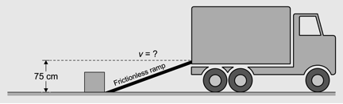

Question 10
While loading a truck, Sam and Nic use a
frictionless ramp.
They push a 10.0 kg box along the ground
at a constant velocity and release the box at the bottom of the ramp. The top
of the ramp is 75 cm above the ground.

What minimum velocity must the box have at the
bottom of the ramp in order to reach the top of the ramp?
A) 3.8 m/s
B) 15 m/s
C) 38 m/s
D) 1500 m/s